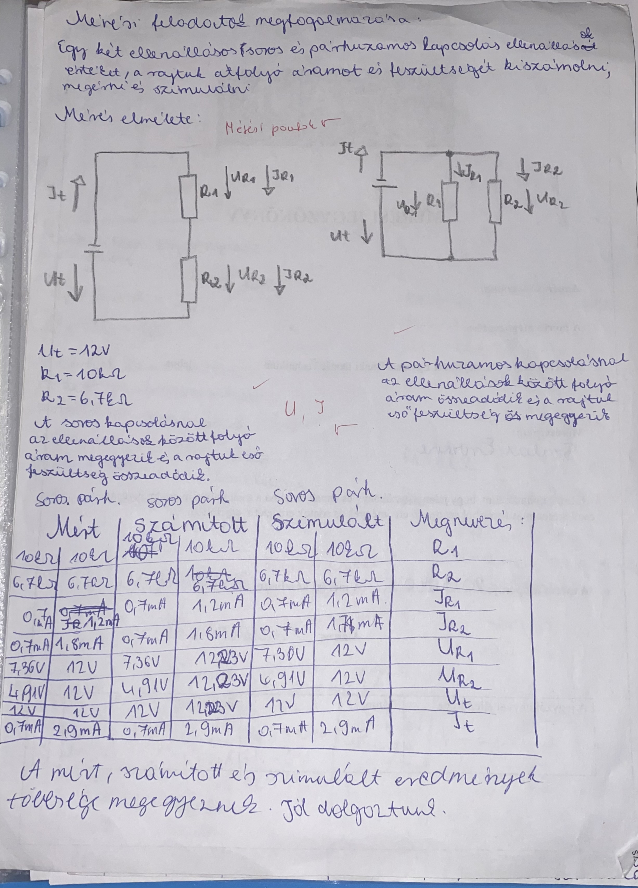

11. évfolyam
ELSŐ FÉLÉV
Elektronika: Az elektronika tantárgy keretében az alapvető elektronikai áramköröket, azok működését és felépítését tanultuk.

Önreflexió: A tantárgy során mélyebb megértést nyertem az elektronikai áramkörök működéséről, és gyakorlati tapasztalatokat szereztem a tervezésükben.
Mikrovezérlő programozás: A mikrovezérlő programozás tantárgy keretében a beágyazott rendszerek programozását, perifériák kezelését és mikrovezérlők működését tanultuk.
Önreflexió: Nagyon hasznosnak találtam a programozás alapjait, és egyre inkább képes vagyok beágyazott rendszereket fejleszteni.
MÁSODIK FÉLÉV
Programozás alapjai: Alapvető programozási nyelvek elsajátítása.
Önreflexió: A programozás alapjaival való megismerkedés során sikerült mélyebben megérteni a különböző nyelvek közötti különbségeket és alkalmazási területeiket.
Digitális áramkörök: A digitális áramkörök tantárgy során a logikai kapuk és sorrendi hálózatok működését tanultuk.
Önreflexió: A digitális áramkörök megértése nagyban hozzájárult a problémamegoldó képességem javulásához.
12. évfolyam
ELSŐ FÉLÉV
Adatbázis-kezelés: Az adatbázis-kezelés tantárgyban mélyebb szintre léptünk, és bonyolultabb adatbázis rendszereket terveztünk.
Önreflexió: Az adatbázisok kezelése és tervezése során új megközelítéseket sajátítottam el, és sikerült optimalizálni a lekérdezéseket.
Hálózatkezelés: A hálózatkezelés tantárgy keretében az alapvető hálózati fogalmakat és eszközöket tanulmányoztuk.
Önreflexió: A hálózatok kezelésében szerzett tapasztalataim segítenek a gyakorlatban is hatékonyan megoldani a hálózati problémákat.
MÁSODIK FÉLÉV
PLC programozás: A PLC programozás során a programozható logikai vezérlőket tanulmányoztuk és alkalmaztuk.
Önreflexió: A PLC programozás megismerése nagy segítséget jelentett az automatizálási rendszerek fejlesztésében.
Számítógépes szimuláció: A számítógépes szimulációk segítségével különböző rendszereket modelleztünk.
Önreflexió: A szimulációk alkalmazása segített abban, hogy jobban megértsem a rendszerek működését és optimalizáljam azok teljesítményét.
13. évfolyam
ELSŐ FÉLÉV
Munkavállalói ismeretek idegen nyelven (német): A munka világához kapcsolódó alapvető kifejezéseket és fogalmakat tanultunk német nyelven.
Önreflexió: A munka világához kapcsolódó szókincs elsajátítása hasznos volt a jövőbeli munkakereséshez.
IoT (Internet of Things): Az IoT tantárgyban az internetre csatlakozó eszközökkel, mint például okos otthonokkal és IoT alkalmazásokkal foglalkoztunk.
Önreflexió: Az IoT világának megismerése és a kapcsolódó alkalmazások fejlesztése érdekes új lehetőségeket nyitott számomra.
MÁSODIK FÉLÉV
Programfejlesztés: A programfejlesztés során különböző programozási technikákat és eszközöket tanulmányoztunk.
Önreflexió: A programfejlesztés során széleskörű ismereteket szereztem különböző nyelvekről és fejlesztési technikákról.
Robottechnika: A robottechnika tantárgyban a robotok irányításáról és működéséről tanultunk.
Önreflexió: A robottechnika különösen érdekes volt számomra, és nagy kíváncsisággal várom, hogy hogyan alkalmazhatom a jövőben.